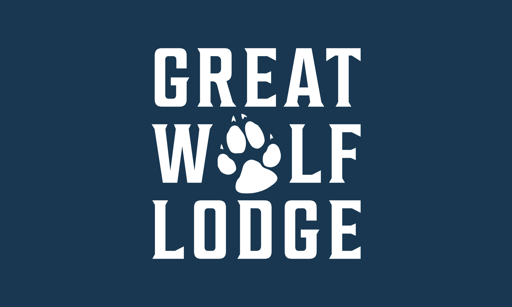
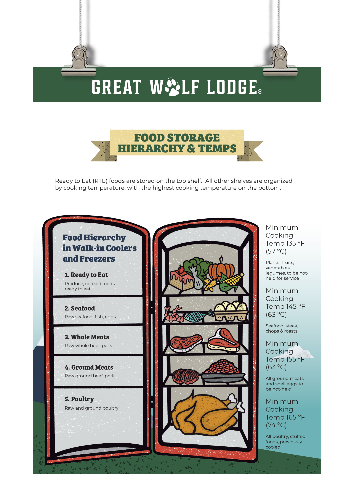
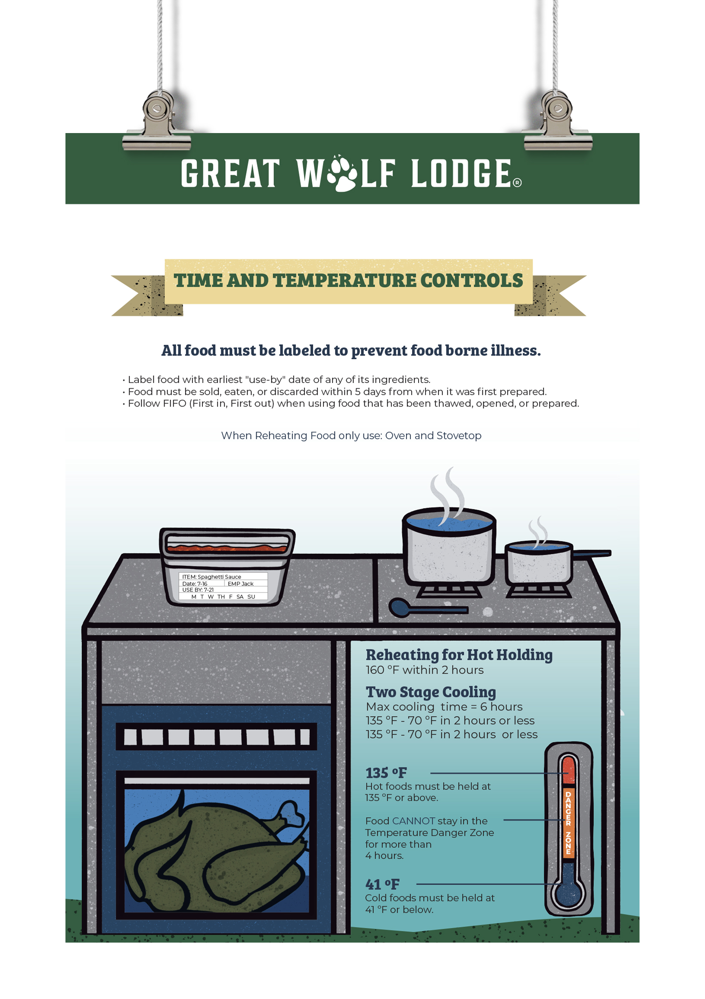
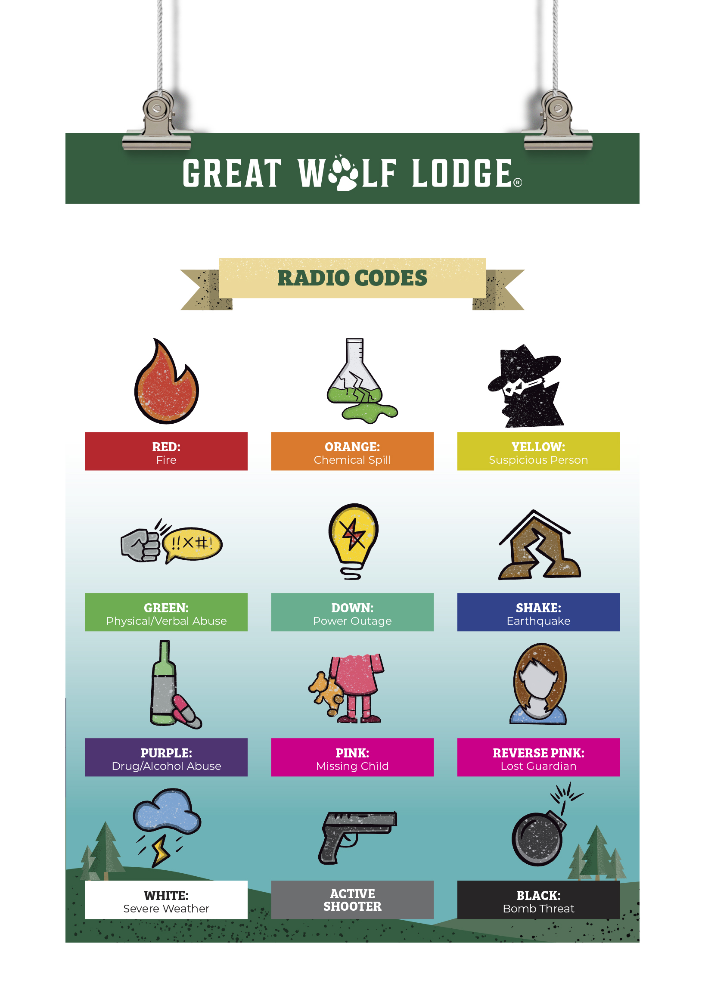
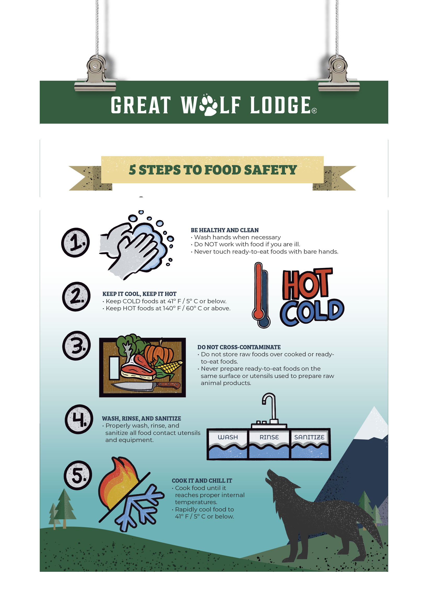
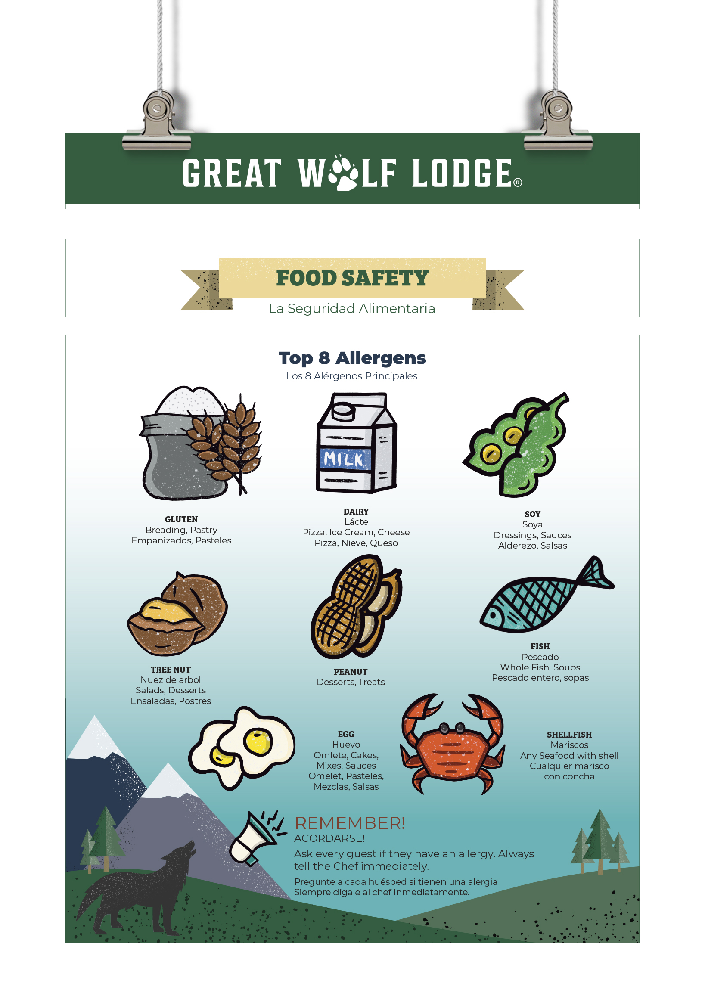
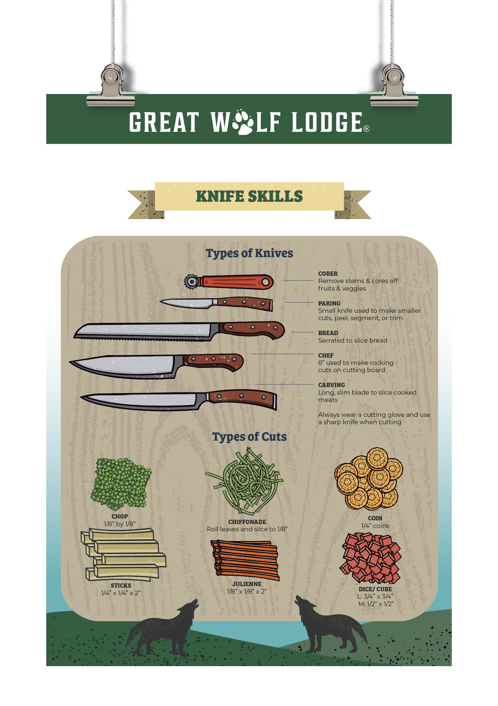

Custom illustrated kitchen training posters for Great Wolf Lodge staff — vibrant, branded, and built to educate.

Great Wolf Lodge needed kitchen training materials that staff would actually read. The existing documentation was dry, text-heavy, and routinely ignored — a safety and efficiency problem in a high-volume resort kitchen operation.
I designed a series of training posters anchored by custom illustrations of equipment and procedures — each one built to communicate clearly at a glance. Bold color-coding, oversized iconography, and step-by-step visual sequences replaced the walls of text. Every poster was engineered to match the Great Wolf Lodge brand while functioning as a quick-reference tool in a real kitchen environment.
The result: training materials that staff actually engage with — posters that teach faster, reduce errors, and stay on the wall instead of ending up in a drawer.





